Jobs
Everybody can do everything. A job decides what you start with, where you start, and what you do twice as fast.
New to the Station Engineer? The Engineer guide goes station by station: Heron, Millrace and Cairn.
 Station Master
Station Master Registrar
Registrar Watch Officer
Watch Officer- Advocate
- Station Engineer
 Medical Doctor
Medical Doctor Scientist
Scientist- Storekeeper
- Botanist
 Chef
Chef Bartender
Bartender Miner
Miner Caretaker
Caretaker Chaplain
Chaplain Hand
Hand
Station Master 
The Station Master runs the shift from the Bridge. Their ID card opens every door.
You start with
- In your hands: nothing
- Backpack:
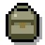
Backpack holding Standing Orders
Standing Orders - Feet:
 Fancy shoes on a station with gravity (Millrace, Cairn); bare feet or socks on weightless Heron.
Fancy shoes on a station with gravity (Millrace, Cairn); bare feet or socks on weightless Heron. - Pockets:
 Flashlight
Flashlight  Pen
Pen
Access
Card access: all areas. Starts in the Station Master's Office. Their ID card opens the Botanics (botanics), the Bridge (command), the Station Master's Office (command), the Registrar's Office (command), the Registrar's Berth (command), the Infirmary (medical), the Surgery (medical), the Chemistry (medical), the Research and Development (science), the Robotics (science), the Genetics (science), the Watch Office (watch), the Holding (watch), the Stores Counter (stores), the Stores Bay (stores), the Mining Dock (stores), the Caretaker's Store (maintenance), the Air Works (engineering), the Machine Workshop (engineering), the Electrical Workshop (engineering), the Construction Workshop (engineering), the Battery Room (engineering), the Inverter Room (engineering), the Transformer Room (engineering), the Solar Control (engineering), the EVA Airlock (engineering), the Cell 1 (watch), the Kitchen (kitchen), the Morgue (medical), the EVA Airlock 2 (maintenance), the EVA Pod (engineering), the High-Voltage Kiosk (engineering), the Station Master's Berth (command), the Station Master's Washroom (command), the Toxins Laboratory (science), the crawlways and every public room.
What you do
- Watch the station on the Bridge's screens and decide what matters most.
- Pick the sentence for a Class 3 offence and hear the Registrar's reports.
- Lock and release cells with the all-areas card, and watch the station's cameras.
- Call the crew's departure vehicle (Heron's shuttle, Millrace's sub, Cairn's plane) when the shift should end (the crew votes first), or early with an order once the shift has run a while.
- Set the alert level (Calm, Swell or Gale) at the Bridge's tactical table: it changes what the Watch's cards open and who opens the armory.
- Give the orders on the same list: lock down Holding, open the armory in an alert, call the departure vehicle early and, on Cairn, close all Windlocks (only your card opens the doors to the ice). Each has a cooldown.
Works with
The Registrar (right hand), Watch and the Advocate.
Tips
- Ask on the radio before you decide: you see the whole station, but others see the problem.
- Do not wander off with the all-areas card: lost cards stay lost.
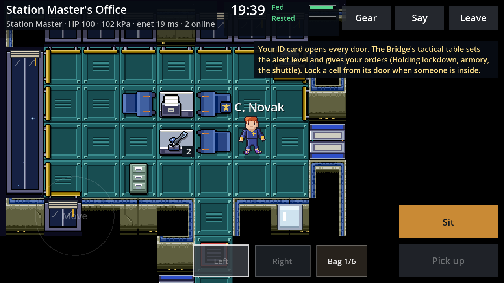


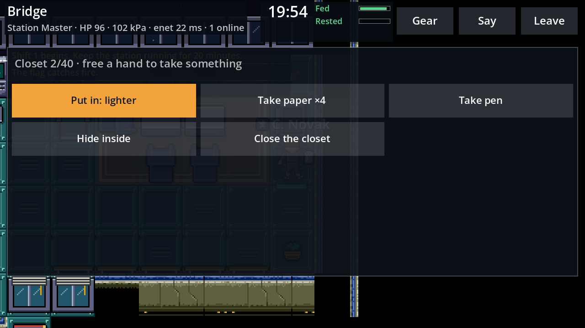
Registrar 
The Registrar looks after the crew's cards and jobs. They keep the offices and the Bridge in order.
You start with
- In your hands: nothing
- Backpack: Backpack holding
 Station Law
Station Law - Feet: Fancy shoes on a station with gravity (Millrace, Cairn); bare feet or socks on weightless Heron.
- Pockets: Flashlight Pen
Access
Card access: command. Starts in the Registrar's Office. Their ID card opens the Bridge (command), the Station Master's Office (command), the Registrar's Office (command), the Registrar's Berth (command), the Station Master's Berth (command), the Station Master's Washroom (command) and every public room.
What you do
- Work the ID console: put a card in and give it another job's name and access (never a command job), as long as the job has a free place.
- Stamp and file the job slip each change prints: it is the desk's paper log.
- Serve the Registrar desk's window and roll its shutter up or down.
- Help the lost: someone without a card cannot open a door.
- Lock a cell with the command card when Watch asks.
- Watch the station's cameras at the Bridge's camera console.
Works with
The Station Master, the Advocate and the whole crew at the desk.
Tips
- Every card change is logged and told to its owner, so say why on the radio.
- Give the right access, no more: Engineering and Medical doors guard dangerous things.
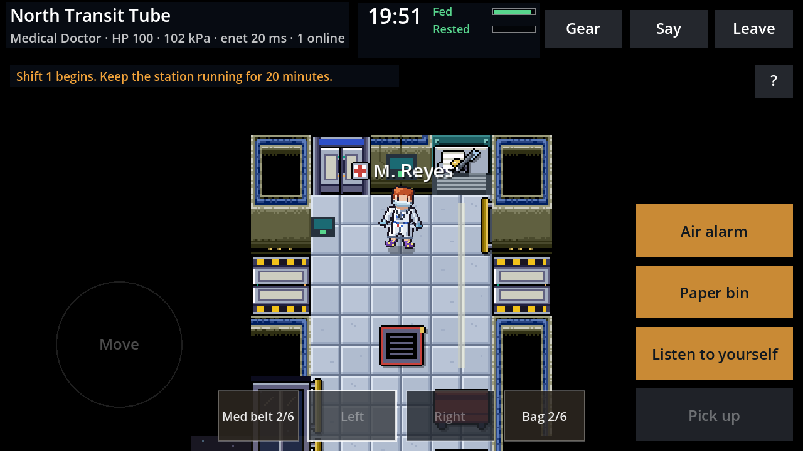

Watch Officer 
The Watch Officer keeps the peace and runs the Holding. The Watch belt holds a taser, a baton, a pepper spray, handcuffs and a flashlight, and you start in a Watch vest and helmet (together 25% less brute damage and 30% shorter stuns; spares in the armory closet), used with the least force that works: Station Law and the procedures say when.
You start with
- In your hands: nothing
- Belt:
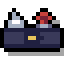
Watch belt holding Taser
Taser  Baton
Baton  Pepper spray
Pepper spray  Handcuffs Handcuffs Flashlight
Handcuffs Handcuffs Flashlight - Backpack: Backpack
- Wearing:
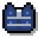
Watch vest Watch helmet - Feet:
 Work boots on a station with gravity (Millrace, Cairn); bare feet or socks on weightless Heron.
Work boots on a station with gravity (Millrace, Cairn); bare feet or socks on weightless Heron. - Pockets: Pen
Access
Card access: watch. Starts in the Watch Office. Their ID card opens the Watch Office (watch), the Holding (watch), the Cell 1 (watch) and every public room.
What you do
- Patrol the corridors and answer calls for help; the camera console in the Watch Office shows who is where.
- Stop a danger with the taser from a distance, the pepper spray up close, and the baton only against an attack; never on someone cuffed or down.
- Cuff someone who holds still, then pull them to Holding.
- Pick a sentence at the cell door panel (see Station Law), take their belongings, and release the cell early if the person falls ill or it loses air.
- Write down every detention.
- Patrol by the alert level: alone in Calm, in pairs and asking for ID in Swell, at the Watch Office and in the danger area in Gale (on Cairn: the yard and the Windlock routes, and in a Gale the blizzard shelter). The armory opens to your card in Swell and Gale.
Works with
The Station Master, the Advocate and the Medical Doctor.
Tips
- Say your reason in one sentence before you stop anyone.
- Read the Law & Standing Orders pages once: the sentences are on a table.
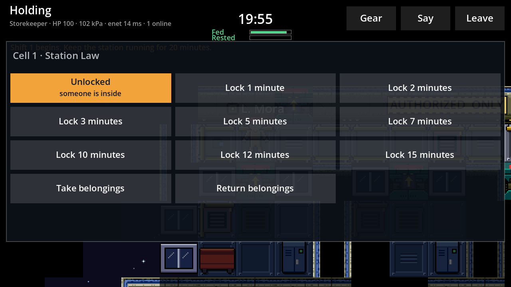
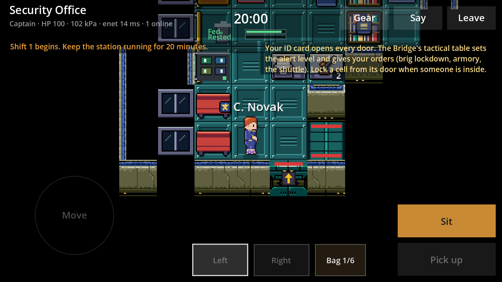

Advocate
The Advocate sees that the law is followed. They work in the Advocate's Chambers, which every card opens.
You start with
- In your hands: nothing
- Backpack: Backpack holding Station Law Standing Orders
- Feet: Fancy shoes on a station with gravity (Millrace, Cairn); bare feet or socks on weightless Heron.
- Pockets: Pen
Access
Card access: holding visits. Starts in the Advocate's Chambers. Their ID card opens the Watch Office (watch), the Holding (watch), the Cell 1 (watch) and every public room.
What you do
- Read both rule books (hold one and tap Read).
- Listen to the detained person, the officer and the witnesses.
- Say whether a charge stands, is lowered or is dropped.
- Tell Watch and the Station Master what the law says.
Works with
Watch, the Station Master and the Registrar.
Tips
- An Advocate cannot open a cell door: persuade, do not order.
- A petition made in good faith is never an offence.

Station Engineer 
The Station Engineer keeps the power on and the hull closed. The station goes dark without one.
You start with
- In your hands: nothing
- Belt:
 Toolbelt holding
Toolbelt holding  Wire cutters
Wire cutters  Welder
Welder  Cable coil
Cable coil  Screwdriver
Screwdriver  Multitool
Multitool  Crowbar
Crowbar  T-ray scanner
T-ray scanner  Wrench
Wrench - Backpack: Backpack holding
 Air tank
Air tank - Wearing:
 Hazard vest Insulated gloves
Hazard vest Insulated gloves  Welding goggles
Welding goggles  Hard hat
Hard hat - Feet: Work boots on a station with gravity (Millrace, Cairn); bare feet or socks on weightless Heron.
Access
Card access: engineering, maintenance. Starts in the Machine Workshop. Their ID card opens the Caretaker's Store (maintenance), the Air Works (engineering), the Machine Workshop (engineering), the Electrical Workshop (engineering), the Construction Workshop (engineering), the Battery Room (engineering), the Inverter Room (engineering), the Transformer Room (engineering), the Solar Control (engineering), the EVA Airlock (engineering), the EVA Airlock 2 (maintenance), the EVA Pod (engineering), the High-Voltage Kiosk (engineering), the crawlways and every public room.
What you do
- Patch hull breaches and reinforce worn or cracked walls before they open.
- Find the gap in a cut cable and lay cable over it.
- Walk the truss in an EVA suit to clean, tighten and replace solar parts. On Millrace the dive suit and a tank take you into flooded rooms and out to the rotor fields on the seabed.
- Reset charge controllers, swap failing battery cells and inverter modules.
- Make spare parts at the lathe; rewind the transformer when its winding is gone.
- Charge EVA tanks at the manifold in Air Works (wrench the hose on), wrench Stores's gas cylinders onto the port when a store runs low, and press failed parts into plates at the scrap press.
- Twice as fast at: patch a breach, open or close a door's panel, lift a floor tile, strip a hull wall's plating, wrench a pipe loose or tight, lay a pipe, cut a pipe and reinforce a worn hull wall.
Works with
Storekeeper (plates and parts), the Caretaker (tunnels) and Watch (hacked doors).
Tips
- Look at the outer walls on every round: a stain is cheap to fix, a hole is not.
- Hang a lockout tag on every breaker before you touch the transformer.
Engineer guide: map by map
Three stations, three power plants. On every one nothing is announced: read the consoles first, then repair. Spare parts are made at the lathe in the Machine Workshop from plates. The rules behind each step are on How to play.
Heron: the solar chain and the walk outside
- Read before you walk. The three consoles of Solar Control show the arrays, the battery bank and the inverters. A part runs hotter, gives less and only then fails, so the amber and red lights on the cabinets are your work list.
- Night is part of the orbit. The station circles every 8 minutes and spends the last 2 minutes in shadow, when the bank carries everything. Do not start a job that takes the grid down just before the shadow.
- Inside first. A tripped charge controller needs its cause cleared (vents with a screwdriver, terminals with a wrench) and then a Reset with a multitool. Swap a failing battery cell or inverter module for a spare from the lathe.
- Going out. Put on the EVA suit and helmet, keep an air tank in the suit's storage, step into an EVA airlock and press the button beside its door. The safety rope never snaps, so walk the whole truss; the only limit is the air in the tank.
- On the truss. A squeegee cleans a dusty panel, a new solar panel from the lathe replaces a cracked one, a wrench tightens an array that lags the sun and grease frees a worn tracking joint (tighten the bolts first on a stuck one).
- Back in. The same button fills the chamber with air and takes the rope off, and it will not while somebody is still outside. Refill the tank at the filling point of either airlock before the next trip.
- The transformer. Before anyone works on its core: open every breaker, hang a lockout tag on each, test the transformer dead with a multitool and put the earthing rod on. The crane refuses to move the core until that is done.
Millrace: the turbines and the dive
- The tide is the clock. Power comes from the seabed turbines, and the tide turns every 8 minutes: slack water, a surge, slack water, a surge. In slack water the battery bank carries the station, so do not let it run low before one.
- Read Turbine Control. Its three consoles show every field of rotors, the bank and the inverters. A current surge, a fouled field or a tripped converter shows there first.
- Four things wear on the seabed. Marine growth (a rotor brush), a bearing (a new bearing), a seal (a new seal, then reset the converter) and a field's cable (a cable coil). The brush, the bearing and the seal are turned at the lathe from plates.
- The dive. Take a dive suit from the Moon Pool on the Keel and keep an air tank in its storage. Stand at the water and tap Dive into the pool: you come out on the seabed on the dive line, which never snaps. At the lit ring tap Climb into the pool to come back up.
- Go in pairs. One diver on the seabed, one engineer at the consoles: the diver brushes and re-seals, the engineer resets the converter.
- When the sea comes in. A hull seep or a pressure breach floods rooms, the deepest deck first. Patch each cracked wall with a hull plate and the welder, then put the room in Drain at its air alarm; a wrench clears a jammed bilge pump.
- The lockout at the transformer is the same as on Heron.
Cairn: heating and power
- Four sources. Four wind masts, a geothermal tap, a diesel genset as the backup and the battery bank. The power console in Power Control shows the wind now and what the next minutes hold.
- Rime and crust. Rime builds on the blades all shift: stand on the ice beside the mast in a parka and chip it off by hand. The geothermal heat exchanger grows a crust of minerals: flush it at the wellhead.
- The genset. Pour fuel drums into its tank in the Generator Shed (order them at the supply console). On Auto it starts when the bank is low; it will not start with an empty tank or in a shed that is too cold.
- Heat is one loop. The boiler in Heat Control heats glycol, the pump drives it along the red supply pipe to the radiators and back along the blue return. Read the loop in the Heat tab of the atmos console.
- After a blackout bring the boiler back first and thaw from it outwards. Set the pump to Low: on Mid or High it pushes against frozen pipe and bursts it. A heat gun thaws a frozen pipe quickly; a burst pipe needs a new one from the lathe, fitted with a wrench.
- Mind the doors. Keep one Windlock door shut while the other is open, and wear the outdoor kit (parka, beanie, warm gloves, boots) for any job on the yard.
- The lockout at the transformer in Power Control is the same as on Heron.
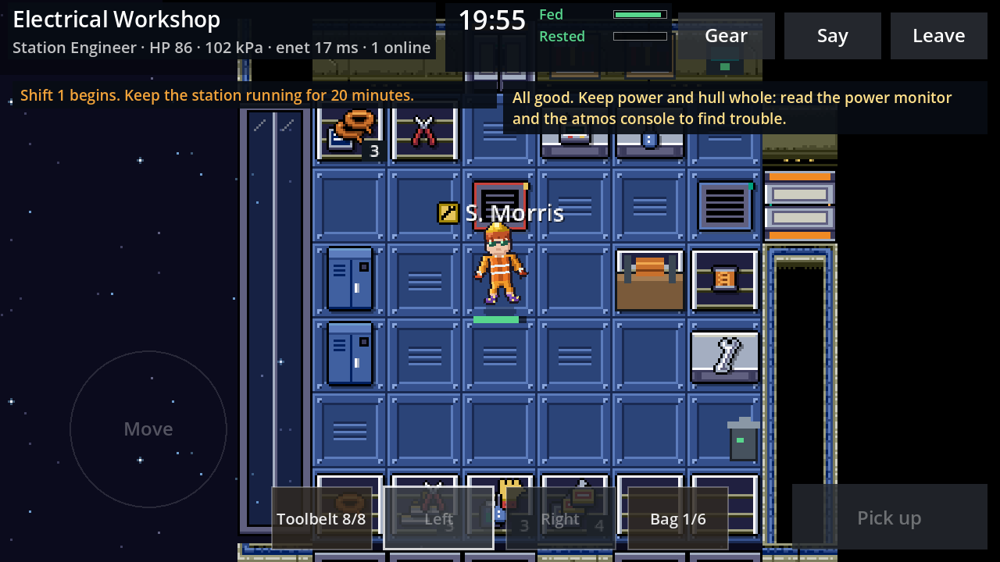
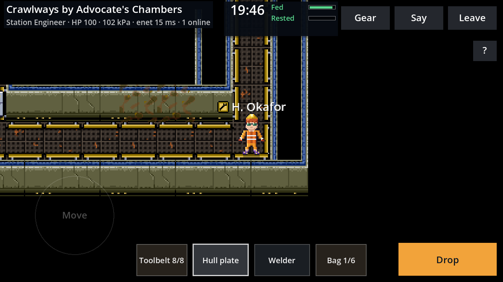

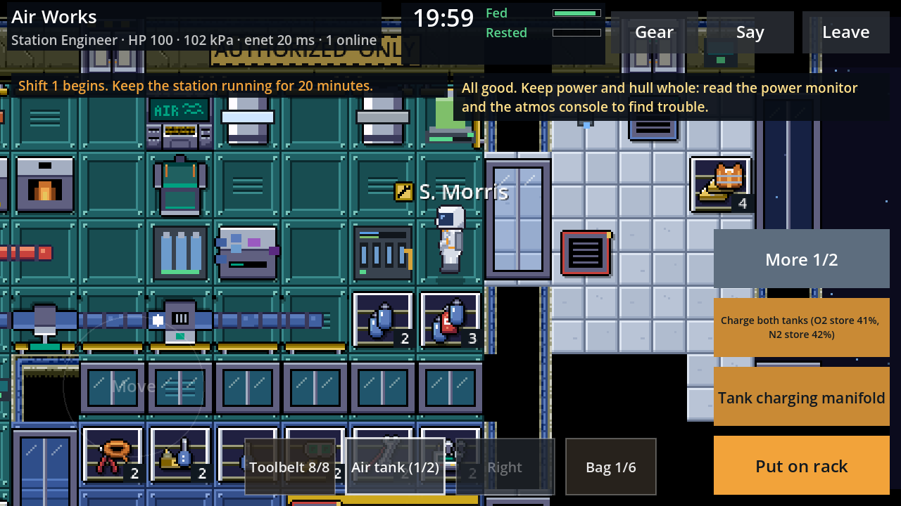
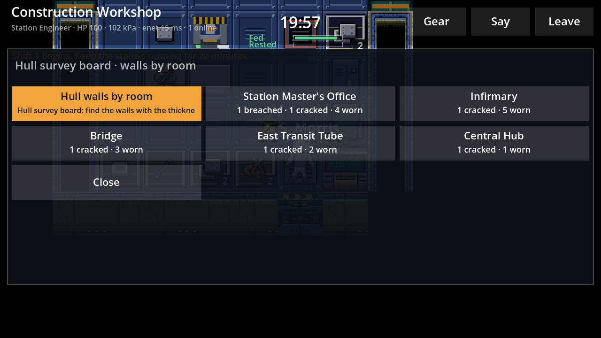
Medical Doctor
The Medical Doctor keeps the crew alive. Whoever falls must be treated in time; the dead can be revived for a short while.
You start with
- In your hands: nothing
- Belt:
 Medical belt holding
Medical belt holding  Defibrillator
Defibrillator  Health analyzer
Health analyzer - Backpack: Backpack holding
 First aid kit Air tank
First aid kit Air tank - Wearing:
 Lab coat
Lab coat  Latex gloves
Latex gloves  Sterile mask
Sterile mask  Stethoscope
Stethoscope - Feet:
 Shoes on a station with gravity (Millrace, Cairn); bare feet or socks on weightless Heron.
Shoes on a station with gravity (Millrace, Cairn); bare feet or socks on weightless Heron.
Access
Card access: medical. Starts in the Infirmary. Their ID card opens the Infirmary (medical), the Surgery (medical), the Chemistry (medical), the Morgue (medical) and every public room.
What you do
- Scan people with the health analyzer and treat them with the first aid kit.
- Revive someone with the defibrillator within the revive window.
- Read the crew monitor to see who is hurt and where.
- Treat colds and flu with cold medicine; work in Surgery and the Morgue.
- Twice as fast at: treat someone, revive someone and listen to someone.
Works with
Watch (the detained), the Station Master and everyone who gets hurt.
Tips
- Ask people to set their suit sensors to Vitals or more.
- Carry an air tank: a breached room is where people fall.

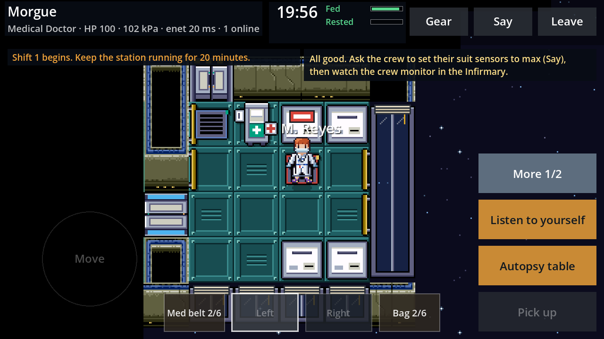

Scientist 
The Scientist does the station's research with the other Scientists (projects, experiments and the Referee's reviews, in four labs) and also builds and mends the station's four kinds of robot in the Robotics room: one job for research and robotics. Nobody is tied to a bench.
You start with
- In your hands: nothing
- Belt: Toolbelt holding Multitool Wrench
- Backpack: Backpack holding Screwdriver
 Hull plate Hull plate Hull plate
Hull plate Hull plate Hull plate - Wearing: Lab coat Latex gloves Sterile mask
- Feet: Shoes on a station with gravity (Millrace, Cairn); bare feet or socks on weightless Heron.
- Pockets: Pen
Access
Card access: science. Starts in the Research and Development. Their ID card opens the Research and Development (science), the Robotics (science), the Genetics (science), the Toxins Laboratory (science) and every public room.
What you do
- Start a project at the R&D console, from a need another job filed or from the list, and plan it: a method and the safety measures.
- Bring or ask for a sample (a crop, ore, a reagent), then run the experiment at the bench, the Toxins lab's vessel or the culture chamber; feed the data sheets to the console and analyse them (30 s). A literature review (45 s) can save a run or the sample. On Millrace the Toxins lab is the Toxins Bay behind R&D's blast door on the Dock deck, with its own gas cylinders, and a stock cabinet in R&D holds copper, plates and reagents for the first projects.
- Submit the finding at the console: the Directorate Review Board's Referee answers in a minute or so (accept, minor or major revisions with a repeat to do, a citation request to comply with or refuse, or a rejection). Withdraw a project that is flagged as unethical, if you must. Then build the prototype at the Robotics bench from plates, copper and reagents bought at the supply console.
- Give the prototype to the department that asked for its field trial; their first use writes a Trial report. Hand a held report in at the console to release the project: the points are paid and the bench makes the item for the shift.
- Answer service tickets: an ore assay (richer smelting), a material test (the thinnest walls), a sample diagnosis (faster medicines), a crop trial (a better crop).
- Robotics: build a medibot, constructionbot, electricianbot or securibot at the robot fabricator from the hull plates in your backpack (only the Scientist can build robots; the work takes half the time for you), set a flat-battery robot right with the screwdriver, and keep plates coming from the Robotics racks, Stores and the Miner.
Works with
Every job: the Botanist, the Miner and Chemistry bring samples, the Engineer and the Medical Doctor ask for projects, and Watch, the Station Engineer and the Medical Doctor meet the robots.
Tips
- Watch the research budget: the Directorate gives the station about a hundred points at the start of the shift, starting a project spends its cost (10 to 15 for a small one, 30 to 40 for a big one), a good release pays back more, and with no points left no new project starts. The pool also buys rare samples from Stores (an assay copper bar, a reagent set, a sea or ice sample) that make the data better; Storekeeper approves them, and the supply points stay Storekeeper' own.
- A robot is slower than a person and waits half a minute before it mends a hole or a cable: do the urgent work yourself, and check the red-eyed ones.
- Mind the safety measures: the plan with none doubles the chance of an accident.
- A ruptured vessel hurts everyone within two tiles: keep clear, and shut the blast door.
- Alone, the Station Master's stamp pays half.
- About one release a shift is the target: a failed trial sends the project back to its plan with notes, and the next runs are a little better.


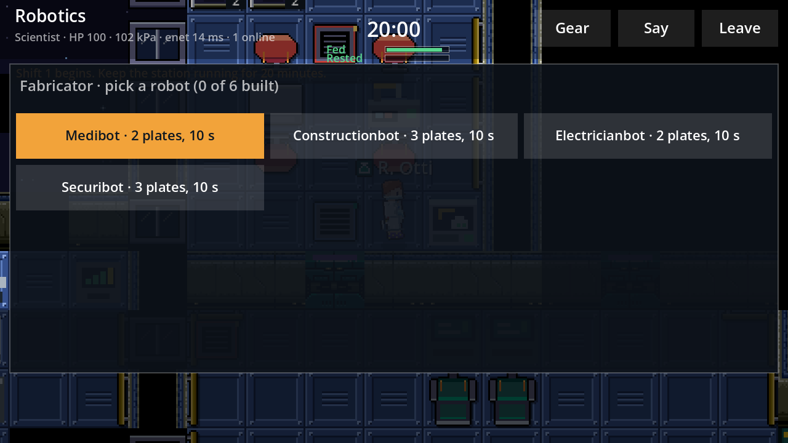
Storekeeper
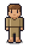
Storekeeper runs supply and cargo. They approve orders and load the delivery pad.
You start with
- In your hands: nothing
- Backpack: Backpack holding Crowbar
 Stores stamp
Stores stamp - Feet: Work boots on a station with gravity (Millrace, Cairn); bare feet or socks on weightless Heron.
- Pockets: Pen
Access
Card access: stores. Starts in the Stores Counter. Their ID card opens the Stores Counter (stores), the Stores Bay (stores), the Mining Dock (stores) and every public room.
What you do
- Approve or deny supply requests at the order console: approved orders land on the pad.
- Stamp order forms and file them in the filing cabinet for points.
- Ship the pad's goods away to earn points.
- Force doors open with a crowbar faster than anyone else.
- On Cairn: order frozen rations (they arrive in an insulated crate), read the cold-chain ledger in Supply Reception, check the thermometer board in the Cold Cellar, and haul the supply flight's crate from the yard pad to Stores on the sled (six crates) before it thaws.
- Twice as fast at: force a door open, approve a supply order and deny a supply request.
- Orders you approve land in 20 s instead of 40 s.
Works with
The Station Engineer (plates, parts, fertilizer), the Miner and the Botanist.
Tips
- Points are shared: spend them on what the station needs now.
- Answer the radio: a request waits until someone looks.

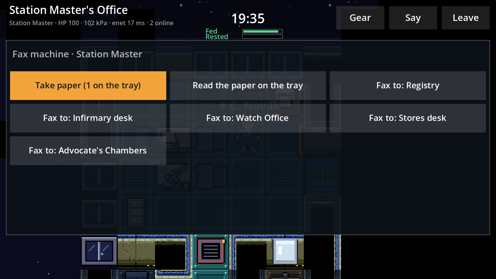
Botanist 
The Botanist grows the crew's food in the greenhouse. They plant, water, weed and harvest, and send the produce to the kitchen.
You start with
- In your hands: nothing
- Belt:
 Seed pouch holding
Seed pouch holding  Wheat seeds
Wheat seeds  Tomato seeds
Tomato seeds  Bean seeds
Bean seeds  Potato seeds
Potato seeds  Rice seeds
Rice seeds  Corn seeds
Corn seeds  Carrot seeds Onion seeds
Carrot seeds Onion seeds - Backpack: Backpack holding
 Watering can (empty)
Watering can (empty) - Feet: Shoes on a station with gravity (Millrace, Cairn); bare feet or socks on weightless Heron.
Access
Card access: botanics. Starts in the Botanics. Their ID card opens the Botanics (botanics) and every public room.
What you do
- Plant a seed in each tray from the seed pouch.
- Water, fertilize and weed the trays; treat sick plants with a spray.
- Harvest ripe plants and drop the produce into the pass-through cabinet.
- Keep an eye on the clock: each crop ripens on its own time.
- Twice as fast at: plant a seed, harvest a plant, water a tray, fill a watering can, fertilize a tray, pull the weeds of a tray, treat a sick plant and use the compost bin.
Works with
The Chef (the cabinet), Storekeeper (fertilizer, sprays, seeds) and the Bartender (fruit).
Tips
- Care work takes the Botanist half the time: do the rounds early.
- Check the tray with one tap: it says water, food, weeds and disease.
Crops
The greenhouse (Botanics, glass on all sides) has planting trays, a sink, a compost bin and racks of seeds of all 11 crops. The Botanist plants a seed (2 seconds), the plant ripens in 2 minutes to 6 minutes depending on the crop, and a harvest (3 seconds) gives its crop's produce (1 to 3, more when well tended) and the seed back. A few trays start the shift already growing, so the first harvest comes in a minute. Tray care has its own rules: see the Botanics page.
The seed pouch holds one seed of each crop of the first group; the second group's seeds lie on the greenhouse racks, and Stores sells a seed of any crop.
| Crop | Group | Grows in | Water a minute | Nutrients a minute | Produce | Goes into |
|---|---|---|---|---|---|---|
| Wheat | 1 | 150 seconds | 20 | 12 | 2 | Flatbread, Malt tea |
| Tomato | 1 | 3 minutes | 24 | 16 | 2 | Tomato pilaf, Bean stew, Tomato soup, Tomato fizz |
| Bean | 1 | 210 seconds | 14 | 6 | 2 | Protein skillet, Rice bowl, Bean stew |
| Potato | 1 | 3 minutes | 16 | 16 | 3 | Harvest hash, Vegetable stew, Corn chowder, Potato soup, Fried potato strips, Baked potato |
| Rice | 1 | 4 minutes | 30 | 14 | 2 | Tomato pilaf, Rice bowl |
| Corn | 1 | 270 seconds | 20 | 22 | 2 | Corn chowder |
| Carrot | 1 | 150 seconds | 14 | 10 | 3 | Vegetable stew, Carrot salad |
| Onion | 1 | 3 minutes | 12 | 10 | 2 | Harvest hash, Vegetable stew, Corn chowder, Mushroom pan, Potato soup, Onion broth |
| Apple | 2 | 6 minutes | 10 | 14 | 3 | Fruit compote |
| Mushroom | 2 | 2 minutes | 12 | 8 | 1 | Mushroom pan |
| Sugar Beet | 2 | 4 minutes | 14 | 12 | 2 | Beet sugar |
Plant care
- Every planting tray keeps its own state: water (0 to 100), nutrients (0 to 100), weeds (0 to 3) and a disease flag (blight or aphids). Tap a tray (Check tray) for one line, 'Water 60 · Food 40 · Weeds 1 · Healthy', and for the buttons that fit what you hold. Anyone in reach may look: a tray's state is no secret.
- Water falls steadily while a plant grows (each crop has its own thirst) and a plant with none stops growing. It wilts only after 4 minutes with no water, and water brings it back. Fill a watering can at the sink in the greenhouse (Fill can, 3 seconds): it holds 4 waterings, and each Water (3 seconds, half that for the Botanist) adds 50.
- Nutrients fall as a plant eats. With 50 or more it grows 25 percent faster and, fed most of the time, gives one more produce; with none it grows 30 percent slower. A fertilizer sack has 5 uses (Fertilize, 4 seconds, adds 50); Stores orders one for 3 supply points.
- Weeds come to a tray about every 2 minutes and each one slows the plant by 15 percent. Weed (4 seconds, by hand) pulls them all; they lie on the tile as weeds. The compost bin in the greenhouse takes them (Compost weeds): every 6 make one use of fertilizer, which a sack in the hand takes out again (Take fertilizer).
- A disease (blight or aphids) is rare. It slows the plant by 40 percent, shows as spots on the tray, and left alone for 3 minutes it moves to a healthy tray next to it. A plant spray (4 uses, Treat, 5 seconds) cures it; Stores orders one for 2 supply points.
- Care costs time, not the harvest: a plant left dry, weedy, sick or hungry for 90 seconds in all still gives half its produce, and no job's absence starves the station. Weeding, watering, fertilizing and treating take 3 seconds to 5 seconds, half of that for the Botanist.
What the crops go into is in the Chef's dish list.


Chef 
The Chef cooks the crew's food in the kitchen. Without a Chef the ration dispenser feeds the crew, but meagrely.
You start with
- In your hands: nothing
- Backpack: Backpack
- Wearing:
 Apron
Apron  Chef's hat
Chef's hat - Feet: Shoes on a station with gravity (Millrace, Cairn); bare feet or socks on weightless Heron.
Access
Card access: kitchen. Starts in the Kitchen. Their ID card opens the Kitchen (kitchen) and every public room.
What you do
- Take produce from the pass-through cabinet.
- Pick a dish at the stove from one list that shows what is still missing.
- Put the dishes on the serving counter: anyone may take from it.
- On Cairn: cook a ration stew from frozen rations (a thawed ration makes only a thin stew, a spoiled one nothing): it is the best hot meal against the cold.
- Twice as fast at: cook a dish.
Works with
The Botanist (produce) and the whole crew (hunger).
Tips
- Cook the biggest meals first: they fill the most.
- The hat and apron show on your sprite: spares are in the cabinet.
Dishes
The Chef cooks at the stove and picks a dish from one list that shows the ingredients still missing. A dish fills the hunger meter by the percentage shown. The bar's drinks and the mixer's recipes are in the Bartender's drink list.
| Makes | At | Ingredients | Fills | Takes |
|---|---|---|---|---|
| Harvest hash | Stove | protein block and potatoes and onions | 65% | 12 s |
| Protein skillet | Stove | protein block and beans | 60% | 10 s |
| Vegetable stew | Stove | carrots and potatoes and onions | 52% | 12 s |
| Corn chowder | Stove | corn cobs and potatoes and onions | 56% | 11 s |
| Tomato pilaf | Stove | rice and tomatoes | 47% | 9 s |
| Rice bowl | Stove | rice and beans | 45% | 9 s |
| Bean stew | Stove | beans and tomatoes | 42% | 8 s |
| Mushroom pan | Stove | mushrooms and onions | 38% | 8 s |
| Potato soup | Stove | potatoes and onions | 40% | 8 s |
| Fried potato strips | Stove | 2 potatoes | 38% | 7 s |
| Fruit compote | Stove | apples and beet sugar | 34% | 8 s |
| Tomato soup | Stove | 2 tomatoes | 33% | 7 s |
| Flatbread | Stove | 2 wheat | 30% | 6 s |
| Carrot salad | Stove | 2 carrots | 25% | 6 s |
| Onion broth | Stove | 2 onions | 26% | 7 s |
| Baked potato | Stove | potatoes | 28% | 10 s |

Bartender 
The Bartender makes the bar's drinks and serves them. Several strong ones in a few minutes make the drinker tipsy; soft ones are food and comfort.
You start with
- In your hands: nothing
- Backpack: Backpack holding
 Shaker
Shaker - Wearing: Bartender's vest
- Feet: Shoes on a station with gravity (Millrace, Cairn); bare feet or socks on weightless Heron.
Access
Card access: bar. Starts in the Bar. Their ID card opens every public room.
What you do
- Pour from a bottle or the tap into a glass, add ice, top it up with soda or tonic.
- Shake a drink with the shaker in one hand and a glass in the other, or mix a hot one at the mixer.
- Serve the glass to someone beside you, or set it on the counter.
- Wash used glasses at the sink, refill the ice bucket and restock bottles from the racks or Stores.
- On Cairn: mix a hearth cup or a warm cordial, both warm the core; ice blocks from the yard go into glasses and the bucket.
- Twice as fast at: mix a drink, shake a cocktail, wash a glass and freeze ice.
Works with
The Chef and Botanist (ingredients), the Storekeeper (bottles) and the crew at the counter.
Tips
- Nothing else depends on the bar: use quiet time to help elsewhere.
Drinks and cocktails
- Every drink ends in a glass in the maker's hand: no table is needed. Serve hands it to someone beside you with a free hand, or put it on a counter.
- Pour: a bottle in one hand and an empty glass in the other, then tap Pour. A bottle holds 6 pours; the empty one is gone, and the spares stand on the bar's racks or are ordered from Stores.
- Tap: hold an empty glass beside the bar's tap and tap Pour from the tap. The tap never runs dry.
- Add ice: hold a glass or a poured drink and tap Add ice, with the ice bucket in your other hand or within reach, or an ice block in your other hand. The bucket holds 6 scoops; the bar's mixer freezes it full again (8 seconds), or an ice block does at once.
- Long drink: hold a poured drink in one hand and a soda or tonic bottle in the other, then tap Pour.
- Shake: the shaker in one hand and a clean glass in the other, then tap Shake and pick one of 8 drinks. Each takes a pour of two or three bottles that you carry or that stand within reach (3 seconds of work, half that for the Bartender).
- Mixer: put the ingredients on the bar's mixer and tap Mix with a clean glass in your hand; hot drinks come from it, and so does sugar from beets (it lands on the mixer).
- Wash: a drunk or spilled drink leaves a used glass. Wash glass at a sink (2 seconds, half that for the Bartender) and put it back on the glass rack.
- 3 strong drinks within 4 minutes make the drinker tipsy for a minute or so (see Service jobs); soft drinks never do, and some leave the drinker Comforted for 1 minute.
| Drink | Method | Ingredients | Kind | Fills |
|---|---|---|---|---|
| Keel Foam | Tap | the bar's tap | Strong | 8% |
| Zero Point | Pour | orbit white | Strong | 4% |
| Deep Measure | Pour | trench dark | Strong | 4% |
| Orchard Glass | Pour | orchard juice | Soft | 9% |
| Comet Core | Add ice | Zero Point and ice | Strong | 4% |
| Cold Seep | Add ice | Deep Measure and ice | Strong | 4% |
| Moon Pool Chill | Add ice | Orchard Glass and ice | Soft | 10% |
| Long Orbit | Long drink | Zero Point and brine tonic | Strong | 6% |
| Black Tide | Long drink | Deep Measure and pressure soda | Strong | 6% |
| Greenhouse Cooler | Long drink | Orchard Glass and pressure soda | Soft | 12% |
| Solar Spritz | Shake | orchard juice and amber ferment | Strong | 7% |
| Nebula Fizz | Shake | amber ferment and sweet syrup | Strong | 7% |
| Airlock Sour | Shake | orchard juice and bitters | Strong | 6% |
| Dry Dock | Shake | amber ferment and bitters | Strong | 6% |
| Re-entry | Shake | orbit white and orchard juice and bitters | Strong | 7% |
| Pressure Ridge | Shake | orbit white and sweet syrup and brine tonic | Strong | 6% |
| Abyss Glow | Shake | trench dark and sweet syrup and bitters | Strong | 6% |
| Quiet Shift | Shake | orchard juice and sweet syrup and pressure soda | Soft | 13% |
| Tomato fizz | Mixer | tomatoes | Soft | 6% |
| Malt tea | Mixer | wheat | Soft | 5% |
| Hearth cup | Mixer (Cairn Station) | malt tea and beet sugar | Strong | 7% |
| Warm cordial | Mixer (Cairn Station) | apples and beet sugar | Soft | 6% |
| Iced cordial | Mixer (Cairn Station) | ice block and apples | Soft | 9% |
Mixer recipes
At the bar's mixer one list shows every recipe with the ingredients still missing. A drink needs a clean glass in your hand.
| Makes | At | Ingredients | Fills | Takes |
|---|---|---|---|---|
| Tomato fizz | Bar mixer | tomatoes | 6% | 3 s |
| Malt tea | Bar mixer | wheat | 5% | 3 s |
| Beet sugar | Bar mixer | sugar beets | — | 3 s |
Miner 
The Miner works for Stores. Mining is an expedition: on Heron they ride the mining shuttle out into space to an airless field of rock about 60 by 40 tiles, and on Millrace the Mining Sub to the seabed, and bring back ore.
You start with
- In your hands:
 Hand drill
Hand drill - Belt:
 Miner belt holding
Miner belt holding  Ore bag
Ore bag  Bandage
Bandage  Epinephrine pen
Epinephrine pen - Backpack: Backpack holding Air tank
- Feet: Work boots on a station with gravity (Millrace, Cairn); bare feet or socks on weightless Heron.
- Pockets: Flashlight
Access
Card access: stores, maintenance. Starts in the Mining Dock. Their ID card opens the Stores Counter (stores), the Stores Bay (stores), the Mining Dock (stores), the Caretaker's Store (maintenance), the EVA Airlock 2 (maintenance), the crawlways and every public room.
What you do
- Put on a suit, helmet and tank from the Mining Dock's rack, and board the mining shuttle (call it at the dock console; in the cabin tap Sit and send to the mine). The trip takes a few seconds.
- Drill ore from the deposits into the ore bag on the Miner belt's hook: each holds only two or three digs and none grows back, and the rich ones lie far from the landing.
- Refill the tank at the cabin's filler (six refills a trip), call the shuttle home from the console on the landing, then load the hopper at the refinery and smelt: plates from iron ore, copper bars from copper ore, both from a crystal.
- On Millrace take a dive suit and a tank from the Mining Dock's rack and ride the Mining Sub to the seabed site.
- Hand plates to the Station Engineer.
- Twice as fast at: drill ore from the asteroid and smelt ore.
Works with
Storekeeper and the Station Engineer.
Tips
- The site has no air and no rope: a tank lasts five minutes on Heron (eight in a dive suit on Millrace), so check it before the door opens.
- At the site the shuttle leaves 20 s after somebody steps into its cabin, with those strapped in: the panel counts the seconds in red.
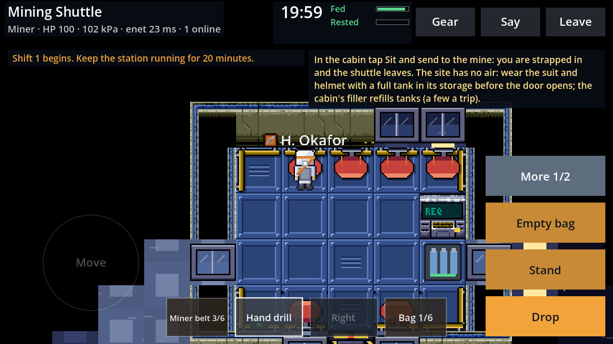
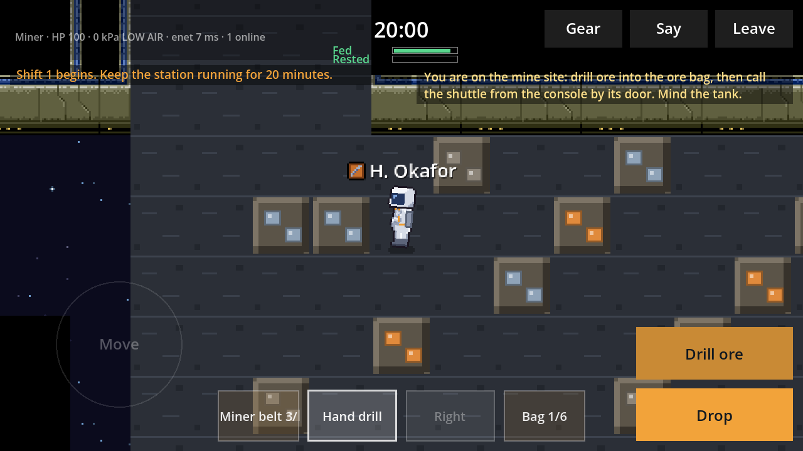


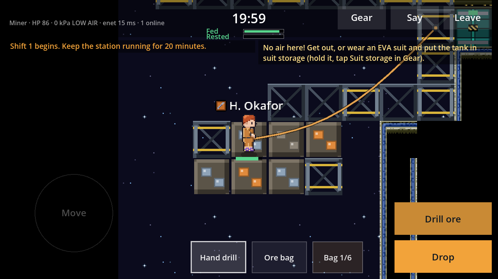

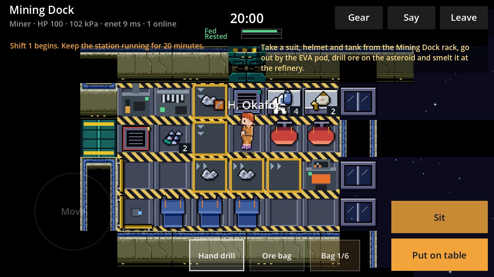
Caretaker 
The Caretaker keeps the station clean and lit. Where there is gravity spills make people slip, and dark rooms hide trouble.
You start with
- In your hands: nothing
- Belt:
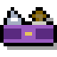
Caretaker belt holding Mop
Mop 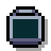
Bucket (empty) Box of lightbulbs
Box of lightbulbs  Wet floor sign Wet floor sign
Wet floor sign Wet floor sign - Backpack: Backpack holding
 Squeegee
Squeegee - Feet: Work boots on a station with gravity (Millrace, Cairn); bare feet or socks on weightless Heron.
- Pockets: Flashlight
Access
Card access: maintenance. Starts in the Caretaker's Store. Their ID card opens the Caretaker's Store (maintenance), the EVA Airlock 2 (maintenance), the crawlways and every public room.
What you do
- Mop puddles (fill the bucket at a sink first); the tools hang on the Caretaker belt.
- Put a wet floor sign where a puddle waits (stations with gravity only: nobody slips on weightless Heron).
- Replace the bulbs that burn out in the rooms' lamps.
- Clear the waste line's clogged pipes with the plunger.
- Use the crawlways to move around.
- On Cairn: empty the boot mats at the Windlocks, mop the puddles of tracked-in snow and shovel the drifts off the yard's sled lane so the sled can pass.
- Twice as fast at: fill a bucket, mop a puddle and replace a lightbulb.
Works with
The Station Engineer (leaks, cracked walls), the Storekeeper (the sled lane) and everyone who slips.
Tips
- Mopping and bulb work take half the time: do them as you pass.
- A cracked wall that leaks makes a new puddle: tell the engineer.


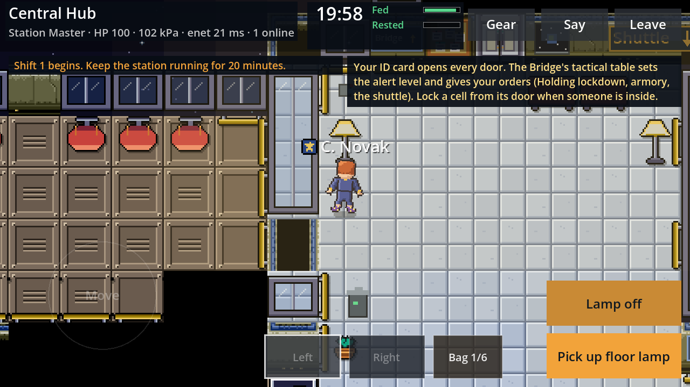
Chaplain 
The Chaplain looks after the crew's spirits in the Chapel. A blessing or a service leaves people Comforted, hungry and tired a little more slowly.
You start with
- In your hands: nothing
- Backpack: Backpack holding
 Hymnal
Hymnal  Candle Candle
Candle Candle - Feet: Shoes on a station with gravity (Millrace, Cairn); bare feet or socks on weightless Heron.
- Pockets: Pen
Access
Card access: none beyond the public rooms. Starts in the Chapel. Their ID card opens every public room.
What you do
- Tap Comfort beside someone, hurt or not, or Pray for yourself: the one blessed is Comforted for a few minutes (longer if they are hurt or down).
- Light the candles on the Chapel's altar, hold the hymnal and tap Conduct a service: everyone in the Chapel is Comforted (longer with two candles lit).
- Sit with the injured while the doctors work, and keep the Chapel open to all.
Works with
The Medical Doctor (the hurt) and the whole crew.
Tips
- A blessing can be given every 15 seconds, a service every 3 minutes: no need to hurry.
- The Chapel is on Heron beside the hub and on Millrace's Dock.
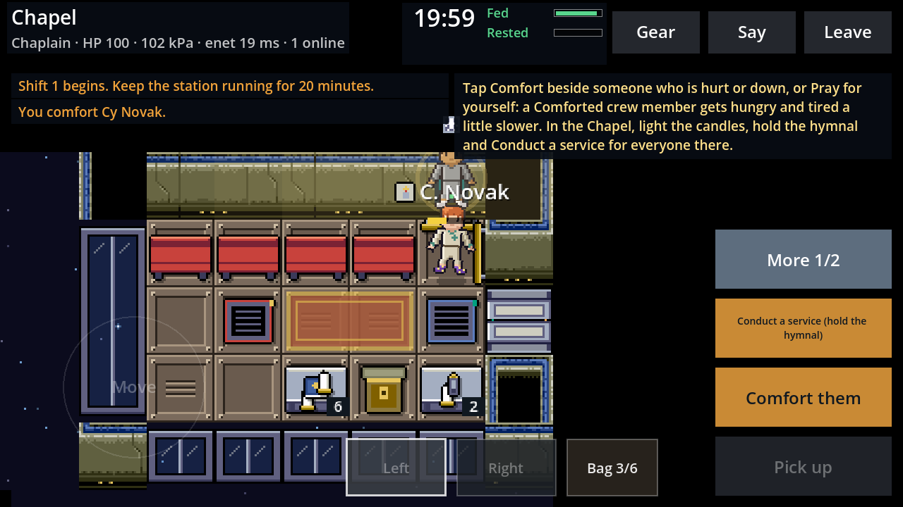

Hand 
The Hand is the station's assistant and the job a new player starts as. There is no limit to how many may take it, and no department door opens for the card.
You start with
- In your hands: nothing
- Backpack: Backpack
- Feet: Shoes on a station with gravity (Millrace, Cairn); bare feet or socks on weightless Heron.
- Pockets: Flashlight
Access
Card access: bar. Starts in the Crew Quarters. Their ID card opens every public room.
What you do
- Help whichever department is short of hands: carry crates for Stores, hold the bucket for the Caretaker, bring the hurt to the Infirmary.
- Serve yourself and others from the counter, and sit at the bar.
- Learn the station by trying every room the card opens: the hall, the canteen's counter, the bar, the restrooms, the chapel and the arrivals.
- Ask the Registrar for a trade when you know what you want to do.
Works with
Every department, and the Registrar, who can change the card.
Tips
- Nobody needs a job to be useful: ask on the radio what is needed.
- Your flashlight is in a pocket: tap it to light dark tunnels.
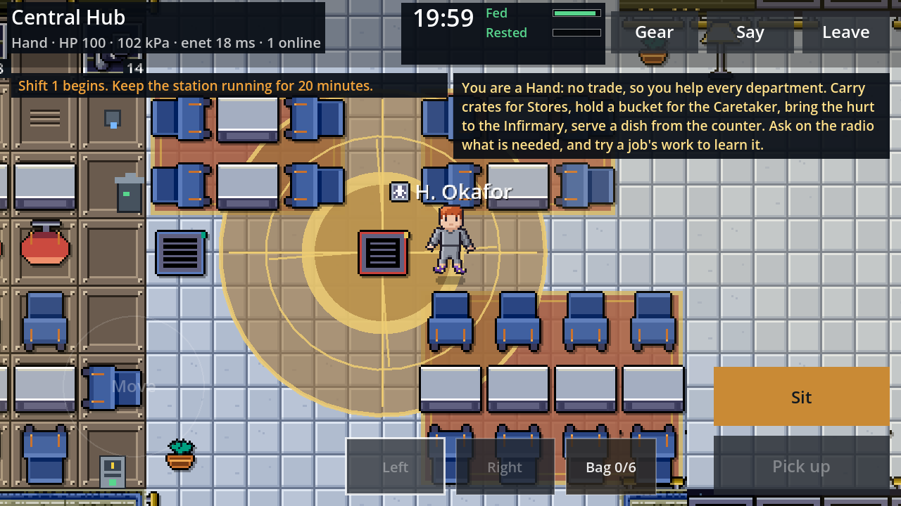
The public rooms, which every ID card opens, are: Central Hub, Bar, North Transit Tube, East Transit Tube, South Transit Tube, West Transit Tube, Science Transit Tube, Watch Transit Tube, Power Transit Tube, Quarters Transit Tube, Infirmary Reception, Advocate's Chambers, Stores Entrance, Main Airlock and Docking Port, Engineering Hall, Crew Quarters, Restroom, Library, Chapel, Crew-Transfer Shuttle.